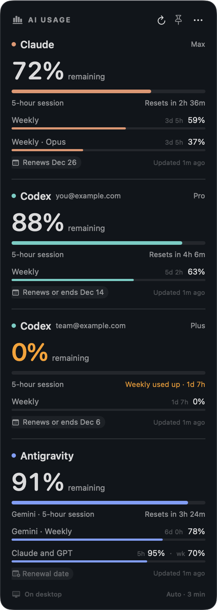
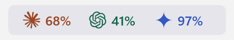
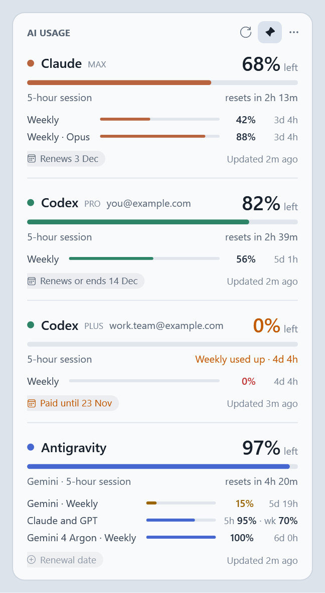

Know what's left of your AI plans before you hit a limit.
A small widget for macOS and Windows that shows the 5-hour and weekly limits of your Claude, ChatGPT/Codex and Gemini subscriptions, and tells you when they run low or reset.
Free and open source under the MIT license. macOS 13+ (Apple silicon and Intel) · Windows 10 and 11. Install guide

Every limit, in one glance
Coding with AI means watching several meters at once. The widget reads them from the tools you already use and keeps them on your desktop.
-
Claude
Your Pro or Max plan's 5-hour session, weekly limit and model limits such as Opus, across claude.ai and Claude Code.
-
ChatGPT and Codex
The Codex limits of your ChatGPT plan, for as many accounts as you use, each labelled with its email.
-
Gemini in Antigravity
Gemini's 5-hour and weekly limits and Antigravity's shared Claude and GPT group, once its CLI is installed.
-
What you can really use
When a weekly limit runs out, the limits under it show 0% and when they come back, instead of a misleading full bar.
-
Alerts that matter
A notification when a 5-hour limit drops below 10%, and another once a limit has actually reset.
-
Renewal dates
Note when each plan renews or ends. Click the date on a card to change it in a small calendar.
Just as much at home on Windows
The Windows app is native too: the same cards on your desktop or on top, in a dark, light or system theme, and a compact strip beside the taskbar clock with one number per provider. Hover for the reset time, click for the full widget.


Install
Download the app for your computer, then sign in to the tools whose plans you want to see. Both apps are unsigned hobby builds, so your system asks once before opening them.
Needs macOS 13 Ventura or newer, on Apple silicon or Intel.
Download and unzip
Download AIUsageWidget-macOS.zip and double-click it in Downloads.
Move it to Applications
Drag AI Usage Widget into your Applications folder.
Open it the first time
The app isn't notarized by Apple, so macOS blocks the first launch:
- macOS 15 and newer: click Done in the warning, open System Settings → Privacy & Security, scroll down and click Open Anyway, then confirm.
- macOS 13 and 14: right-click the app, choose Open, then Open again.
- Or in Terminal:
xattr -dr com.apple.quarantine "/Applications/AI Usage Widget.app"
Allow notifications
The panel appears on your desktop and the readings in the menu bar. Click the menu-bar item for the full view, and use ⋯ for settings such as Launch at Login. The pin keeps the panel above other windows.
Build from source instead
Needs Xcode 15 or newer. The script builds the app, signs it with your Apple Development identity if you have one, installs it to ~/Applications and opens it. Quit the widget before running it again to update.
git clone https://github.com/Marioarttv/AIUsageWidget.git
cd AIUsageWidget
./macOS/scripts/install.shNeeds 64-bit Windows 10 or 11. Everything else is included; you don't need to install .NET.
Download
Download AIUsageWidget-windows-x64.zip, or the ARM64 version for ARM PCs such as Snapdragon laptops (not yet tested on real hardware).
Extract it to a permanent folder
Right-click the zip, choose Extract All… and pick a folder you'll keep, for example
%LOCALAPPDATA%\Programs. Keep the files together.Start it
Open the AI Usage Widget folder and double-click AIUsageWidget.exe. The app isn't code-signed, so SmartScreen may say “Windows protected your PC”: click More info, then Run anyway.
Make it yours
The widget opens on top, and a usage strip appears beside the taskbar clock. In ⋯, turn on Start with Windows. Click the pin to send the widget to the desktop behind your windows.
Build from source instead
Needs the .NET 10 SDK. START-WIDGET.cmd builds the app into the app folder the first time and starts it; SHOW-WIDGET.cmd brings a running widget forward.
git clone https://github.com/Marioarttv/AIUsageWidget.git
cd AIUsageWidget
.\START-WIDGET.cmdConnect your subscriptions
There's nothing to set up in the widget. It finds the sign-ins of the official tools; sign in once in each tool you use. A provider you don't use stays out of the way.
Claude
Install Claude Code and sign in with your Pro or Max subscription.
On a Mac, if the card asks for access, choose ⋯ → Connect Claude… and allow the Keychain prompt.
ChatGPT / Codex
Install the Codex CLI and choose Sign in with ChatGPT.
More than one account? Sign them in to Codex Subscription Router and they appear by themselves, or add another Codex sign-in folder in ⋯ → ChatGPT Accounts.
Antigravity
Install the Antigravity CLI and sign in with your Google account. The card appears once the widget finds it.
Turn it off any time with ⋯ → Show Antigravity.
Your sign-ins stay yours
The widget runs entirely on your computer and only ever asks for usage numbers.
No account, no server
There's no sign-up, analytics or telemetry. The only requests go to the providers themselves.
No tokens spent
It reads Claude's usage endpoint, the Codex CLI's rate-limit call and Antigravity's
/usagecommand. It never starts a conversation.Nothing secret on disk
Sign-in tokens are used in memory for those requests only and never saved or logged. The Antigravity token is never read.
Light on your machine
Native Swift and .NET apps, with no browser engine. They refresh every few minutes and slow down when you're not looking.